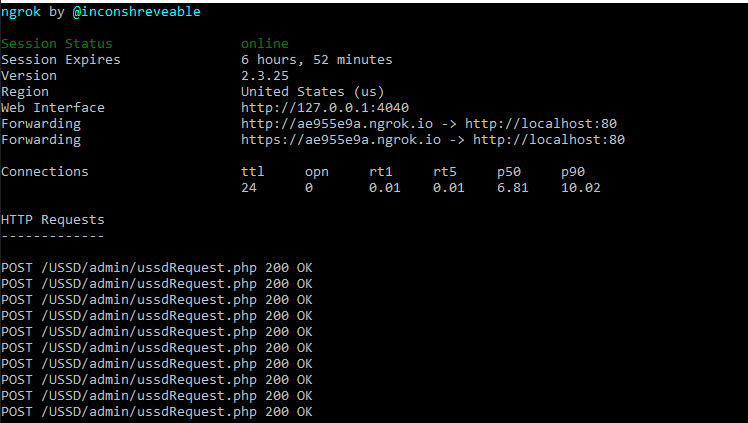

CollinsJumah
collynesjumah@gmail.com
Self taught, inspired Web Artisan
20min read
CollinsJumah
collynesjumah@gmail.com
Self taught, inspired Web Artisan
20min read


The mobile communications technology has quickly become the world’s most common way of transmitting voice, data, and services in the developing world. They carry a potential of being the best media for dissemination of information because mobile services are widely available and inexpensive. Mobile phones are less inhibited by traditional access barriers that hinder the widespread use of many other communications technologies including geography, socioeconomic status, infrastructure such as electricity and literacy.
Today's schools need to manage more information than ever before. Without a solid infrastructure for teachers, administrators and parents to share data, critical school information can be lost or communicated incorrectly, which affects the school's image. Research indicates that parental involvement is an effective strategy to ensure student success (Barnard, 2004;
Using USSD technology, ensures better interaction between parents, teachers and school management. It is the basic idea that knowledge oriented organization (school) has been set up as ground for people to go in and learn in respond to paying their acquired knowledge for. Using Kenyan primary, secondary and tertiary level of education as case study, the research has the intention of creating a software that could process students’ overall performances in all school aspects through this mobile communication technology.
Take a pause, as we dive in.Unstructured Supplementary Service Data or USSD in short is a service that allows mobile phone users to interact with a remote application from their device in real time. A predefined session is started once a user dials in to facilitate the transfer of information between your application and the user. It is a highly scalable service as it does not require an internet connection and is supported by both feature and smartphones.
USSD communication is initiated by dialling a special code. USSD codes comprise of asterisk (*),
followed by a combination of digits (0 to 9) and a hash (#) Example *144#. The * and # codes are used to
signify the beginning and end of the request. The request is received by the network service providers:
Africastalking(recommended).
The third-party application i.e. the webserver, is exposed to the internet by the use
of ngrok or the localtunnel. This enables all data stored in the local MySQL to be accessible by the gateway.
The call back URL is created thus communication link is set and the gateway send back response to the user.
The response send sets a session that enable user to access data in real-time with no delays.
This is an address that a server provides, and any computer in the Internet/private network can POST data to it.
Click here to clone or download the code.
run the command: Ngrok http 80 to establish a connection on port 80: the port forwarding urls will be established to be used.

{ignore POSTS displayed}, focus on the forwarding Urls.
If you preffer local tunnelling,
Using NodeJs, localtunnel will be installed by running the command in the nodeJs command line: npm install –g localtunnel followed by:
lt –port 80
Now let's create callback Url.